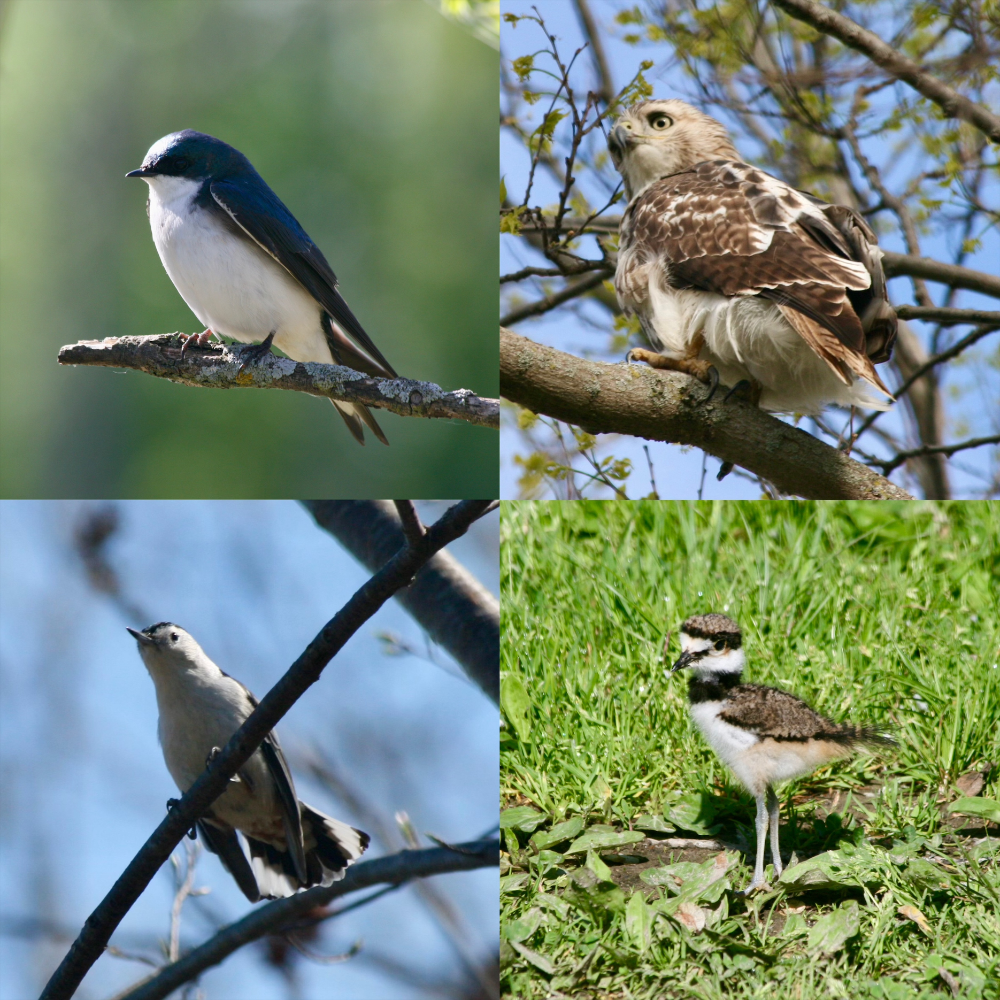

Lakeshore Nature Preserve Birding Tour
Welcome to the Lakeshore Nature Preserve! This 300-acre natural area on the UW-Madison campus serves as a living classroom, supporting teaching, research, and providing a space where campus and community can connect with nature. As one of campus’ most cherished features, the preserve serves as a physical link from the campus to the lake. A renowned birding destination, the Lakeshore Nature Preserve draws birders from near and far. In 2023 alone, 211 unique bird species were observed here. This walking tour will guide you through the preserve’s diverse habitats, offering a window into the incredible biodiversity of the Lakeshore Nature Preserve.
